Quick Greek!
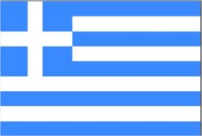
History Points
History of the Greek Language
This page offers only a very brief introduction to the history of the Greek Language, giving only the basics. For a thorough treatment of the topic, read Geoffrey Horrocks' book, Greek: A History of the Language and its Speakers.
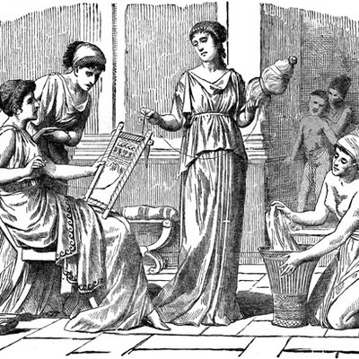
Three terms are used to designate long periods
in the history of the Greek Language: Hellenic, Hellenistic, and Byzantine:
Linear B
The history of the Greek Language begins, as far as the surviving texts are concerned, with the Mycenaean civilization at least as early as the thirteenth century BCE. The earliest texts are written in a script called Linear B. After the collapse of the Mycenaean civilization (around 1200 BCE) writing disappeared from Greece. In the late ninth to early eighth century BCE a script based on the Phoenician syllabary was introduced, with unneeded consonant symbols being reused to represent the Greek vowels. The oldest surviving alphabetic inscriptions are written using this new system and date from the late eighth century BCE.
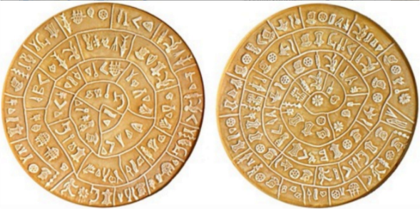Classical Period
Ιn the classical, or hellenic period, Greek existed in several major dialects, each of which has its own significance for the history of the language, but the most influential of these would ultimately prove to be the one spoken in Athens, called Attic. Well within the hellenic period, though, Attic and Ionic—the form of the language spoken mainly in the Greek city states directly across the Aegean Sea from Athens—exerted significant influence on each other as the preferred forms of the language for oratory and philosophical prose, eventually producing a dialect now called Attic-Ionic.
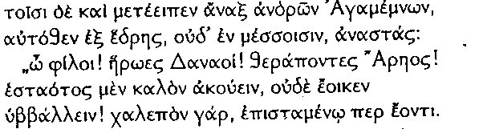
The Hellenistic Koine
Τhe terms “Hellenistic Greek” and “Koine Greek” are used interchangeably for the language spoken in this period. Christian scholars also use the terms “Biblical Greek” and “New Testament Greek” to refer to the language of this period as it appears in the earliest copies of the New Testament of the Christian Bible. After the conquests of Alexander the Great (roughly 336-323 BCE) the language underwent far-reaching changes. Alexander carried the Attic-Ionic form of the language, along with Greek culture more generally, far into the Near East where it became the standard language of commerce and government, existing along side many local languages. Greek was adopted as a second language by the native people of these regions and was ultimately transformed into what has come to be called the Hellenistic Koiné or common Greek. This new form of the language remained essentially a further development of the Attic-Ionic synthesis. The Hellenistic Koine brought significant changes in vocabulary, pronunciation, and grammar, and some of these changes have persisted into Modern Greek. The time of rapid change initiated by Alexander, though, lasted from about 300 BCE to 300 CE. The histories of Polybius, the discourses of Epictetus, and the Christian New Testament all date from this period and are good representatives of the Koine.

Atticism
During the hellenistic period some purists reacted strongly against the Koine. They developed a movement called Atticism, which treated classical Attic as the only acceptable standard for prose writing. This movement would continue to influence Greek writing well into the modern era by constraining the production of literature in the normal idiom of actual daily speech.
Byzantine Greek
Αtticism dominated the production of literature for the entire Byzantine era from the establishment of Constantinople in 330 until 1453 when the city was defeated by the Turks. The development of actual daily speech during this period is extraordinarily difficult to reconstruct since the vernacular speech was deemed unfit for literary production. As Greece entered a protracted period of bondage to the Turks lasting four hundred years, its literary production had been drastically reduced by the demands of Atticism.
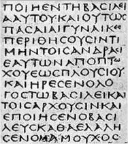Development of Modern Demotic Greek
Crete managed to resist Turkish control until 1669. The poetry produced there in the local dialect near the end of this period would contribute significantly to the development of modern demotic literature as would the folk songs produced on the mainland. When Greece finally won its freedom in 1830 a new kingdom was formed with Athens and the Peloponnese at its core. The dialects spoken in these regions became the basis for the standard spoken language of today's Greek society. This standard was not formed directly from the folk songs and poetry of earlier peasant society, however. A purified, katharevusa (Καθαρεύουσα) form of Greek was devised. Efforts to impose it were heavily influenced by the old Atticism, though, and the attempt to produce a prose medium broad enough to cover both formal and colloquial situations has proved extraordinarily difficult. Even today the language question still presents problems, yet the continuing growth of educational institutions as well as journalism and the broadcast media have begun to affect a solution. The distance between demotic and katharevusa is narrowing as a way of speech arises which combines aspects of both.
Quick Menu
Made for a University Coursework in 2014 by Charalampos Daskalopoulos
Introduction: What's on this page?
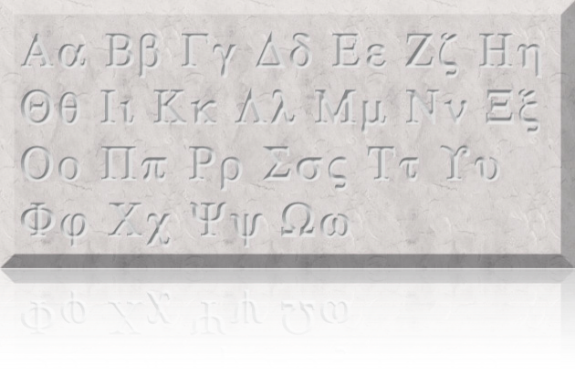The letters in the Greek alphabet presented below are used for printed Ancient Greek texts. The earliest Greek texts that have survived were written with a radically different script calledLinear B. For a detailed and wonderfully well argued discussion of the origins of the Greek alphabet, see Roger D. Woodard’s book,Greek Writing from Knossos to Homer.
Pronouncing the Greek Alphabet
Three sets of pronunciation suggestions are given in the table below: first the pronunciation of each letter in Modern Greek, then the reconstructed Hellenistic Koine pronunciation, and finally the reconstructed pronunciation for the Classical period (before about 350 BCE). The Erasmian pronunciation used in many schools to teach Biblical Greek and sometimes even Classical Greek is not given on this page. It is omitted because it does not accurately reflect the actual pronunciation of the language at any point in its history. While it can be valuable for learning to spell many ancient Greek words, it has no real value in leaning how Ancient Greek was actually pronounced. The reconstructed pronunciation for the Hellenistic period—the time of the New Testament and early Christianity—was added in April of 2013 with audio clips. The audio requires that your browser have a Quicktime plugin. If you do not have one, click on any sound icon and you should be prompted to download the most recent version.
Greek Alphabet

Special letters:
Sigma (s, V): There are two forms for the letter Sigma. When written at the end of a word, it is written like this: V. If it occurs anywhere else, it is written like this: σ .
Upsilon (u): In the above table, we suggest that you pronounce this letter like "u" in "put". The preferred pronunciation is actually more like the German "ü" as in "Brücke", or like the French "u" as in "tu". If you do not speak German or French, don't worry about it, just pronounce it the way the table suggests.
Xi (c): This is the same sound as "ch" in "Bach", which does not sound like "ch" in "chair". The same sound occurs in the Scottish "Loch", as in "Loch Lomond", or the German "ach!".
Dipthongs: When two vowels combine to make one sound, it is called a dipthong.
Dipthongs
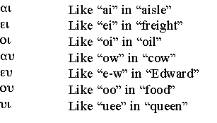The "eu" combination is probably the hardest to learn for most people. It may help to take the "ow" sound and say it slowly: if you notice, there are actually two sounds in "ow" - it starts out with "ah", then glides to an "oo" sound, "ah-oo". Try doing the same with "e" (as in "edward") and "oo" - "e-oo". This is a little like the "e-w" in Edward, if you remove the "d".
Accents:
Accents tell you which syllable is stressed when the word is pronounced. There are three different accents, but by the time of the New Testament, they were all pronounced the same. Here are the three kinds of accents, with a Greek word to illustrate each:
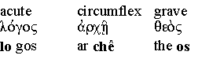Breathings:
The rough breathing is pronounced like an "h", and looks like a backwards comma written over a vowel. The smooth breathing is not pronounced at all, and looks like a regular comma written over a vowel. Note the difference between "en" and "hen":
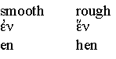Punctuation:
The period and comma are the same as in English. The semicolon is a raised dot, and is also used as a colon. The question mark looks like an English semicolon:

Mnemonics for alphabetic order:
did you ever dream of being able to look up words in a Greek dictionary? In either case, you are going to have to learn the order of the Greek alphabet. The next is a mnemonic which may be helpful for some people:
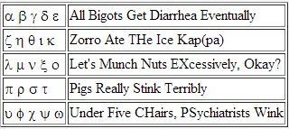How to write Greek letters:
The arrows show you where to start when you write Greek letters. Always remember to write the accents!
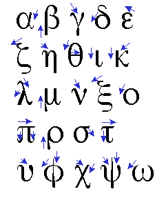
Quick Menu
Made for a University Coursework in 2014 by Charalampos Daskalopoulos
Pronunciation schemes
There are several different ways to pronounce Greek. This one is the Erasmian pronunciation. Here are the main ways that Greek is pronounced:
- Erasmian pronunciation. This is the pronunciation used here, and is probably based on the pronunciation used by a Renaissance scholar named Erasmus, who was the main force behind the first printed copies of the Greek New Testament. The Erasmian pronunciation is probably different from the way Greek was pronounced at the time of the New Testament, but it is widespread among scholars, and it has the advantage that every letter is pronounced, which makes it easy to grasp the spelling of words.
- Modern Greek pronunciation. This is the way Greek is pronounced today in Greece. Some people prefer to teach this pronunciation for New Testament Greek as well. I initially learned the modern Greek pronunciation, but had difficulty learning to spell words, so I switched to the Erasmian. Modern Greek pronunciation is probably more similar to New Testament Greek pronunciation than Erasmian is, but not identical.
- Reconstructed New Testament Greek pronunciation. There are some scholarly books which attempt to reconstruct the original pronunciation of New Testament Greek, and they have reached the point that there seems to be fairly widespread agreement on the original pronunciation. As far as I know, nobody ever teaches this pronunciation. Incidentally, since there was a large variety of Greek dialects, there was no single way to pronounce Greek even in the New Testament era.
- Fraternity, Physics, and Calculus pronunciation. This is the way your physics teacher spoke Greek, and he learned this pronunciation in his fraternity. Next time you hear a physics teacher pronounce Greek, laugh and look superior.
More about Pronunciation
To hear examples of Classical Greek texts read with the reconstructed pronunciation system, visit the Classical Greek Pronunciation page of the Commission for Ancient Literature and Latin Tradition. For a great demonstration of the pronunciation of Modern Greek, see Harry Foundalis' discussion of the Greek Alphabet. He confuses the Erasimian pronunciation with the reconstructed pronunciation of Classical Greek, but his audio demonstrations of Modern Greek pronunciation are extremely valuable. Carl Conrad has provided a fine discussion of the history of Ancient Greek pronunciation by, tracing its development from Indo-european. (Clicking the link will download a PDF file.)
Quick Menu
Made for a University Coursework in 2014 by Charalampos Daskalopoulos
Useful phrases
The following are some useful Greek phrases and words.
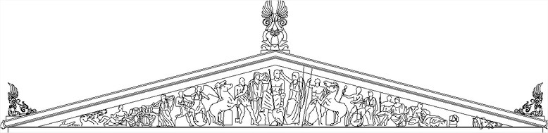|
English Phrases |
Greek Phrases |
|
|
|
|
English Greetings |
Greek Greetings: |
|
Hi! |
Yia (sou/sas) Γεια (σου/ σας) |
|
Good morning! |
KalimEra Καλημέρα |
|
Good evening! |
KalispEra Καλησπέρα |
|
Welcome! (to greet
someone) |
KhErete Χαίρετα |
|
How are you? |
Pos Eisai/ EIste? Πώς είσαι/ είστε; |
|
I'm fine, thanks! |
Yme kalA, efkharistO Είμαι καλά, ευχαριστώ. |
|
And you? |
esY/ esEIs? Εσύ/ εσείς; |
|
Good/ So-So. |
kalA/ Etsi ki Etsi Καλά/ έτσι κι έτσι. |
|
Thank you (very
much)! |
EfkharistO (polY/ pAra polY) Ευχαριστώ (πολύ/πάρα πολύ) |
|
You're welcome! (for
"thank you") |
ParakalO Παρακαλώ |
|
Hey! Friend! |
E! fYle (masculin)/ fYlee (fem) Ε! Φίλε! |
|
I missed you so
much! |
Se pethYmisa (pAra) polY Σε πεθύμησα (πάρα)πολύ! |
|
What's new? |
Ty nEa Εkheis? Τι νέα έχεις; |
|
Nothing much |
tYpota to idiEtero Τίποτα το ιδιαίτερο |
|
Good night! |
kalinYkhta Καληνύχτα |
|
See you later! |
Ys to epanidYn Εις το επανιδείν |
|
Good bye! |
antYo Αντίο |
|
Asking for Help and
Directions |
|
|
I'm lost |
khAthika Χάθηκα |
|
Can I help you? |
MporO na sas voythYso? Μπορώ να σας βοηθήσω; |
|
Can you help me? |
MporEIte na me voythYsete? Μπορείτε να με βοηθήσετε; |
|
Where is the
(bathroom/ pharmacy)? |
Pou Yne (to mpAnio/ to pharmakEIo) |
|
Go straight! then
turn left/ right! |
PygEnete Ysia.
MetA strYpste aristerA/ deksyA |
|
I'm looking for
john. |
psAkhno yia
ton eoAnni Ψάχνω
(για) τον Ιωάννη |
|
One moment please! |
Ena leptO parakalO Ένα λεπτό παρακαλώ |
|
Hold on please!
(phone) |
“ “ |
|
How much is this? |
POsa kostYzy aftO? Πόσα κοστίζει αυτό; |
|
Excuse me ...! (to
ask for something) |
SighnOmi/ Me SigkhorYte Συγγνώμη/
Με συγχωρείτε. |
|
Excuse me! ( to pass
by) |
“ “ |
|
Come with me! |
elate mazy mou/ akolouthYste me |
|
How to Introduce Yourself |
|
|
|
|
|
Do you speak
(English/ Greek)? |
milAte (agglykA/ ellynykA)? Μιλάτε (Αγγλικά/ Ελληνικά); |
|
Just a little. |
lYgo Λίγο |
|
What's your name? |
Pos onomAzeste? Πώς ονομάζεστε; |
|
My name is ... |
onomAzome Ονομάζομαι... |
|
Mr.../ Mrs.…/ Miss… |
kYrios/ kyrYa/ dhespynYs Κύριος/ κυρία/ δεσποινίς |
|
Nice to meet you! |
khArika yia ty gnorymYa Χάρηκα για τη γνωριμία |
|
Where are you from? |
apO pou Yste/ katAgheste? Από πού είστε/κατάγεστε; |
|
I'm from (the U.S/
Greece) |
Yme ap’ tin ellAda/ tin kYpro Είμαι απ’ την Ελλάδα/ την Κύπρο |
|
I'm (American) |
Υme Ellynas/
ellynEEda(fem) Είμαι
Έλληνας/ Eλληνίδα |
|
Where do you live? |
POU mEnete/ katykYte? Πού μένετε/ κατοικείτε; |
|
I live in (the U.S/
Greece) |
mEno (stin ellAda/ stin yndhEEa) Μένω (στην Ελλάδα/ στην Ινδία) |
|
Did you like it
here? |
Sas Arese
edO? Σας άρεσε
εδώ; |
|
Greece is a
wonderful country |
Y ellAda Yne mia ypErokhi khOra Η Ελλάδα είναι μια υπέροχη χώρα |
|
What do you do for a
living? |
Ti doulyA kAnete? Τι δουλειά κάνετε; |
|
I work as a
(translator/ businessman) |
Yme/ DhoulEvo os (metaphrastYs/ epikhyrymatEEas) |
|
I like Greek |
M’ arEsoun ta ellinikA Μ’ αρέσουν τα ελληνικά |
|
I've been learning
Greek for 1 month |
mathEno ellinikA Μαθαίνω ελληνικά εδώ και ένα (1) μήνα. |
|
Oh! That's good! |
O! aftO Yne kalO! Ω!
Αυτό είναι καλό! |
|
How old are you? |
pOso khronO Yste? Πόσω(ν) χρονώ(ν) είστε; |
|
I'm (twenty,
thirty...) years old. |
Yme (EEkosy, triAnda…) khronOn Είμαι
(είκοσι, τριάντα...) χρονών |
|
I have to go |
PrEpy na fYgho/ na pighEno Πρέπει να φύγω/ να πηγαίνω |
|
I will be right
back! |
Tha Yme amEsos pYso Θα είμαι αμέσως πίσω. |
|
Wish Someone
Something |
|
|
Good luck! |
kalY tYkhy Καλή τύχη |
|
Happy birthday! |
kalA/ kharOUmena ghenEthlya Καλά/ χαρούμενα γενέθλια |
|
Happy new year! |
EftikhismEnos o kenOUrghios khrOnos |
|
Merry Christmas! |
kalA khristOUghenna
Καλά Χριστούγεννα |
|
Happy Easter! |
kalO pAskha Καλό Πάσχα |
|
(The Christ is
resurrected) |
KhristOs anEsty Χριστός Ανέστη |
|
Answer to “The
Christ is resurrected” |
alythOs anEsty
o KYryos Αληθώς
Ανέστη ο Κύριος |
|
Congratulations! |
SygkharytYrya Συγχαρητήρια |
|
Enjoy! (for
meals...) |
kalY Oreksy Καλή όρεξη |
|
I'd like to visit
Greece one day |
Tha Ythela na episkeptO tin ellAda mia mEra |
|
Say hi to John for
me |
Pes Ena yia ston eoAnny ek mErous mou |
|
Bless you (when
sneezing) |
yEEtses Γείτσες |
|
Good night and sweet
dreams! |
KalynYkhta kai
Onyra glykA Καληνύχτα και όνειρα γλυκά |
|
Solving a
Misunderstanding |
|
|
I'm Sorry! (if you
don't hear something) |
orYste?/ sighnOmy? Ορίστε;
/Συγγνώμη; |
|
Sorry (for a
mistake) |
sighnOmy/ me sygkhorYte Συγγνώμη/
Με συγχωρείτε |
|
No Problem! |
Dhen ypArkhy prOvlyma Δεν υπάρχει πρόβλημα |
|
Can You Say It
Again? |
MporYte na epanalAvete? Μπορείτε να επαναλάβετε; |
|
Can You Speak
Slowly? |
mporYte na
mylAte pio argA? Μπορείτε
να μιλάτε αργά; |
|
Write It Down
Please! |
ghrApste to, parakalO Γράψτε
το, παρακαλώ |
|
I Don't Understand! |
Dhen katalavEno Δεν καταλαβαίνω |
|
I Don't Know! |
Dhen ksEro Δεν ξέρω |
|
I Have No Idea. |
Dhen Ekho
idEa Δεν
έχω ιδέα |
|
What's That Called
In Greek? |
pos to LEme aftO sta
ellynykA? Πώς το λέμε αυτό στα ελληνικά; |
|
What Does "gato" Mean In English? |
Ti simEni “fos” sta anglykA? Τι σημαίνει «φως» στα αγγλικά; |
|
How Do You Say
"Please" In Greek? |
pos LEme
“please” sta ellynykA? Πώς λέμε “please” στα ελληνικά; |
|
What Is This? |
Ty Yne aftO? Τι είναι αυτό; |
|
My Greek is bad. |
ta ellynykA mou den Yne polY kalA Τα ελληνικά μου δεν είναι καλά |
|
I need to practice
my Greek |
PrEpy na eksaskYso ta ellynykA mou |
|
Don't worry! |
Myn AnysykhYte Μην ανησυχείτε |
|
Greek Expressions
and Words |
|
|
Good/ Bad/ So-So. |
kaLA-kakA– Askhima/ Etsi ki Etsi |
|
Big/ Small |
meghAlos/ micros (for masculin only) Μεγάλος/
μικρός |
|
Today/ Now |
sYmera/ tOra Σήμερα/ τώρα |
|
Tomorrow/ Yesterday |
Avrio/ khthEs Αύριο/ χθες |
|
Yes/ No |
nai/Okhi Ναι/
όχι |
|
Here you go! (when
giving something) |
orYste Ορίστε |
|
Do you like it? |
Sas arEsy? Σας
αρέσει; |
|
I really like it! |
M’ arEsy polY Μ’ αρέσει πολύ |
|
I'm hungry/ thirsty. |
PynAo, DhypsO Πεινάω/
Διψάω |
|
In The Morning/
Evening/ At Night. |
To proY/ to apOghevma/ ty nYkhta |
|
This/ That.
Here/There |
aftO/ ekYno. edhO/ ekY Αυτό/ εκείνο. Εδώ/ εκεί |
|
Me/ You. Him/ Her. |
eghO/ esY. aftOs/ aftY Εγώ/ εσύ. Αυτός/
αυτή |
|
Really! |
AlEEthia Αλήθεια. (Also meaning “truth”) |
|
Look! |
KytAkste Κοιτάξτε |
|
Hurry up! |
ViastEEte Βιαστείτε |
|
What? Where? |
Ty? Pou? Τι; Πού; |
|
What time is it? |
Ty Ora Yne? Τι ώρα είναι; |
|
It's 10 o'clock.
07:30pm. |
i Ora
Yne dhEka. eptAmisi (metA mesimvrYa) |
|
Give me this! |
DhOste mou aftO Δώστε μου αυτό |
|
I love you! |
SagapO(sing.)/Sas aghapO(plural) Σ'
αγαπώ / Σας αγαπώ |
|
I feel sick. |
NiOtho Arostos/
Arosty Νιώθω
άρρωστος/ άρρωστη |
|
I need a doctor |
KryAzome Ena ghiatrO Χρειάζομαι ένα γιατρό |
|
One, Two, Three |
Ena, DhYo, TrYa Ένα, δύο, τρία |
|
Four, Five, Six |
TEssera, pEnde, Eksi Τέσσερα, πέντε, έξι |
|
Seven, Eight, Nine,
Ten |
eptA, oktO, ennEa, dEka Επτά, οκτώ, εννέα, δέκα |
Quick Menu
Made for a University Coursework in 2014 by Charalampos Daskalopoulos
Dictionary
Below you can see some Greek words, their translation along with their pronouciation. Enjoy!
|
English |
Ελληνικά |
Pronunciation |
|
|
|
|
|
|
|
about |
σχετικά |
[sxetika] |
|
|
afraid |
φοβάμαι |
[fovame] |
|
|
after |
μετά |
[meta] |
|
|
against |
εναντίον |
[enantion] |
|
|
all |
όλοι |
[oli] |
|
|
and |
και |
[ke] |
|
|
any |
κάθε |
[kaθe] |
|
|
anybody |
οποιοσδήποτε |
[opiosδipote] |
|
|
around |
γύρω |
[jiro] |
|
|
away |
μακριά |
[makria] |
|
|
awfull |
απαίσιος |
[apesios] |
|
|
ball |
μπάλα |
[mbala] |
|
|
be careful |
πρόσεχε |
[prosexe] |
|
|
beautiful |
όμορφος |
[omorfos] |
|
|
bed |
κρεβάτι |
[krevati] |
|
|
besides |
εκτός |
[ektos] |
|
|
bind, pierce |
δεσμεύω |
[δezmevo] |
|
|
blue |
μπλέ |
[mble] |
|
|
bother |
ενοχλώ |
[enoxlo] |
|
|
bounce |
αναπηδώ |
[anapiδo] |
|
|
boy |
αγόρι |
[aγori] |
|
|
broth (e.g. made using oatmeal) |
ζωμός |
[zomos] |
|
|
bump |
χτύπημα |
[xtipima] |
|
|
call |
καλώ |
[kalo] |
|
|
cap (bonnet) |
καπέλο |
[kapelo] |
|
|
careful |
προσεκτικός |
[prosektikos] |
|
|
chatter |
φλυαρία |
[fliaria] |
|
|
child |
παιδί |
[peδi] |
|
|
child |
παιδί |
[peδi] |
|
|
child |
παιδί |
[peδi] |
|
|
chimney |
καμινάδα |
[kaminaδa] |
|
|
church |
εκκλησία |
[eklisia] |
|
|
cloth, clothing |
ρουχισμός |
[ruxismos] |
|
|
clothes |
ρούχα |
[ruxa] |
|
|
cold |
κρύος |
[krios] |
|
|
common stairwell in a tenement |
κλιμακοστάσιο |
[klimakostasio] |
|
|
complain, cry |
διαμαρτύρομαι |
[δiamartirome] |
|
|
consider |
σκέφτομαι |
[skeftome] |
|
|
corner |
γωνία |
[γonia] |
|
|
cottage |
αγρόκτημα |
[aγroktima] |
|
|
could |
θα μπορούσε
|
[θa
mboruse] |
|
|
cow |
αγελάδα |
[agelaδa] |
|
|
crow |
κοράκι |
[koraki] |
|
|
dance |
χορός |
[xoros] |
|
|
daring |
τολμηρός |
[tolmiros] |
|
|
dead |
νεκρός |
[nekros] |
|
|
devil |
διάβολος |
[δiavolos] |
|
|
dig |
σκάβω |
[skavo] |
|
|
dig |
σκάβω |
[skavo] |
|
|
dirty |
βρώμικος |
[vromikos] |
|
|
do |
κάνω |
[kano] |
|
|
dog |
σκύλος |
[skilos] |
|
|
doric |
δωρική |
[δoriki] |
|
|
dove (or pigeon) |
περιστέρι |
[peristeri] |
|
|
down |
κάτω |
[kato] |
|
|
drain |
στραγγίζω |
[strangizo] |
|
|
drop |
ρίχνω |
[rixno] |
|
|
dusk |
σούρουπο |
[surupo] |
|
|
dust |
σκόνη |
[skoni] |
|
|
dust, spirit |
πνεύμα |
[pnevma] |
|
|
ear |
αφτί |
[afti] |
|
|
endure |
υπομένω |
[[ipomeno] |
|
|
estuary |
εκβολή ποταμού |
[ekvoli
potamu] |
|
|
every |
κάθε |
[kaθe] |
|
|
eye |
μάτι |
[mati] |
|
|
eyes |
μάτια |
[matia] |
|
|
family |
οικογένεια |
[ikojenia] |
|
|
farm(er) |
αγρότης |
[aγrotis] |
|
|
father |
πατέρας |
[pateras] |
|
|
father |
πατέρας |
[pateras] |
|
|
fellow |
σύντροφος |
[sindrofos] |
|
|
fiddle, nuisance |
βιολί |
[vjioli] |
|
|
fine |
ωραίος |
[oreos] |
|
|
fish |
ψάρι |
[psari] |
|
|
folk |
φίλος |
[filos] |
|
|
for |
για |
[jia] |
|
|
four |
τέσσερα |
[tesera] |
|
|
friend |
φίλος |
[filos] |
|
|
from |
από |
[apo] |
|
|
from |
από |
[apo] |
|
|
fuss |
φασαρία |
[fasaria] |
|
|
genial |
λαμπρός |
[lambros] |
|
|
girl |
κορίτσι |
[koritsi] |
|
|
give |
δίνω |
[δino] |
|
|
go |
πηγαίνω |
[pijeno] |
|
|
going |
πηγαίνω |
[pijeno] |
|
|
good |
καλός |
[kalos] |
|
|
Goodness gracious! |
θεε και κύριε |
[θee
ke kirie] |
|
|
Gosh! |
θεε μου |
[θee
mu] |
|
|
guess |
μαντεύω |
[mandevo] |
|
|
half |
μισός |
[misos] |
|
|
half |
μισός |
[misos] |
|
|
hang |
κρεμώ |
[kremo] |
|
|
have |
έχω |
[exo] |
|
|
have |
έχω |
[exo] |
|
|
head |
κεφάλι |
[kefali] |
|
|
head person |
επικεφαλής |
[epikefalis] |
|
|
hide, nestle |
φωλιάζω |
[foliazo] |
|
|
hold |
κρατώ |
[krato] |
|
|
home |
σπίτι |
[spiti] |
|
|
horsefly |
αλογόμυγα |
[alogomiγa] |
|
|
house |
σπίτι |
[spiti] |
|
|
I |
εγώ |
[ego] |
|
|
idiot |
ανόητος |
[anoitos] |
|
|
idiot |
ανόητος |
[anoitos] |
|
|
into |
μέσα |
[mesa] |
|
|
join |
συμμετέμω |
[simetexo] |
|
|
just |
ακριβώς |
[akrivos] |
|
|
just |
ακριβώς |
[akrivos] |
|
|
know |
γνωρίζω |
[γnorizo] |
|
|
lake |
λίμνη |
[limni] |
|
|
leap |
πήδημα |
[piδima] |
|
|
lend |
δανείζω |
[δanizo] |
|
|
limp |
κουτσαίνω |
[kutseno] |
|
|
long |
μακρύς |
[makris] |
|
|
look |
κοιτώ |
[kito] |
|
|
lot |
πολύ |
[poli] |
|
|
louse, nit |
ψείρα, βλάκας |
[psira] |
|
|
lump |
μάζα |
[maza] |
|
|
make |
κάνω |
[kano] |
|
|
many |
πολλοί |
[poli] |
|
|
married |
παντρεμένος |
[pandremenos] |
|
|
mess about |
χάνω την ώρα μου |
[xano
tin ora mu] |
|
|
might(y) |
δύναμη |
[δinani] |
|
|
miserable, cold and wet (weather) |
μουντός |
[mundos] |
|
|
moor |
βάλτος |
[valtos] |
|
|
more |
τερος |
[teras] |
|
|
most |
τατος |
[tatos] |
|
|
mother |
μητέρα |
[mitera] |
|
|
mother |
μητέρα |
[mitera] |
|
|
mountain |
βουνό |
[vuno] |
|
|
mouse |
ποντίκι |
[pondiki] |
|
|
mouth |
στόμα |
[stoma] |
|
|
must |
πρέπει |
[prepi] |
|
|
my |
δικό μου |
[theko
mu] |
|
|
neither here nor there |
ούτε εδώ ούτε εκεί |
[ute
eδo ute eki] |
|
|
never |
ποτέ |
[pote] |
|
|
New Year's Day |
πρωτοχρονιά |
[protoxronia] |
|
|
Nonsense! |
ανοησίες |
[anoisies] |
|
|
not |
δεν |
[δen] |
|
|
now |
τώρα |
[tora] |
|
|
of |
από |
[apo] |
|
|
of |
από |
[apo] |
|
|
off |
μακριά
από |
[makria
apo] |
|
|
old |
παλιός |
[palios] |
|
|
one |
ένα |
[ena] |
|
|
one |
ένα |
[ena] |
|
|
one |
ένα |
[ena] |
|
|
other |
άλλος |
[alos] |
|
|
our |
δικό μας |
[δiko
mas] |
|
|
out(side) |
έξω |
[ekso] |
|
|
over, rather |
πέρα |
[pera] |
|
|
own |
ανήκω |
[aniko] |
|
|
pale |
χλωμός |
[xlomos] |
|
|
pale and weak |
αδύναμος |
[aδinamos] |
|
|
pant |
λαχανιάζω
|
[laxaniaζo] |
|
|
part |
μέρος |
[meros] |
|
|
pebble |
βότσαλο |
[votsalo] |
|
|
person |
άτομο |
[atomo] |
|
|
perverse |
διεστραμένος |
[δiestramenos] |
|
|
phantom |
φάντασμα |
[fantasma] |
|
|
police |
αστυνομία |
[astinomia] |
|
|
potato |
πατάτα |
[patata] |
|
|
pound (money, weight) |
λίρα |
[lira] |
|
|
Quiet! |
ησυχία |
[isixia] |
|
|
rather |
μάλλον |
[malon] |
|
|
raven, crow |
κοράκι |
[koraki] |
|
|
red |
κόκκινο |
[kokino] |
|
|
remember |
θυμάμαι |
[θimame] |
|
|
schoolmaster |
διευθυντής |
[δiefθintis] |
|
|
-self |
μόνος του |
[monos
tu] |
|
|
servant |
υπηρέτης |
[ipiretis] |
|
|
shake/shaky |
κουνάω |
[kunao] |
|
|
shank of meat |
κομμάτι κρέατος |
[komati
kreatos] |
|
|
shopping |
αγορά |
[aγora] |
|
|
skip, smack |
προσπερνώ |
[prosperno] |
|
|
slide of bread with jam, etc. |
φέτα ψωμιού |
[feta psomiu] |
|
|
slope |
πλαγιά |
[plaγia] |
|
|
small |
μικρός |
[mikros] |
|
|
small |
μικρός |
[mikros] |
|
|
smell strongly |
μυρίζω έντονα |
[mirizo
endona] |
|
|
smelly |
βρωμερός |
[vromeros] |
|
|
snow |
χιόνι |
[xioni] |
|
|
so |
ετσι |
[etsi] |
|
|
soaking wet |
μούσκεμα |
[muskema] |
|
|
song |
τραγούδι |
[traγuδi] |
|
|
sparrow |
χελιδόνι |
[xeliδoni] |
|
|
spin |
περιστροφή |
[peristrofi] |
|
|
stand |
στέκομαι |
[stekome] |
|
|
stand |
στέκομαι |
[stekome] |
|
|
stay |
μένω |
[meno] |
|
|
stone |
πέτρα
|
[petra] |
|
|
stream |
ρεύμα |
[revma] |
|
|
stunned |
εντυπωσιασμένος |
[endiposiasmenos] |
|
|
stunning woman |
εντυπωσιακή γυναίκα |
[endiposiaki
γineka] |
|
|
take |
παίρνω |
[perno] |
|
|
tasteless, bitter |
άνοστος |
[anostos] |
|
|
telltale |
μαρτυριάρης |
[martirjiaris] |
|
|
the |
ο, η, το
/οι , τα |
o,I,to/I, ta |
|
|
thirst(y) |
δίψα |
[δipsa] |
|
|
tiny |
μικροσκοπικός |
[mikroskopikos] |
|
|
to |
σε |
[se] |
|
|
together |
μαζί |
[mazi] |
|
|
toilet |
τουαλέτα |
[tualeta] |
|
|
told |
ειπώθηκε |
[ipoθike] |
|
|
town |
πόλη |
[poli] |
|
|
trouble |
πρόβλημα |
[provlima] |
|
|
trousers |
παντελόνι |
[pandeloni] |
|
|
trousers |
παντελόνι |
[pandeloni] |
|
|
tumble |
κατρακυλώ |
[katrakilo] |
|
|
two |
δύο |
[δio] |
|
|
valley |
κοιλάδα |
[kilaδa] |
|
|
very |
πολύ
|
[poli] |
|
|
very cold (weather) |
πολύ
κρύο |
[poli
krio] |
|
|
vest (undergarment) |
γιλέκο |
[γileko] |
|
|
vomit, retch |
κάνω εμετό |
[kano
emeto] |
|
|
wall |
τοίχος |
[tixos] |
|
|
wander about |
περιπλανιέμαι |
[periplanieme] |
|
|
was |
ήταν |
[itan] |
|
|
water |
νερό |
[nero] |
|
|
weep |
θρηνώ |
[θrino] |
|
|
Well then! |
καλά
λοιπόν |
[kala
lipon] |
|
|
Well then! |
καλά
λοιπόν |
[kala
lipon] |
|
|
Well! |
καλά |
[kala] |
|
|
what |
τι |
[ti] |
|
|
where |
πού |
[pu] |
|
|
whiz |
σφυρίζω |
[sfirizo] |
|
|
who |
ποιος |
[pxios] |
|
|
whole |
ολόκληρος |
[olokliros] |
|
|
whom |
ποιόν |
[pxion] |
|
|
will |
θα |
[θa] |
|
|
window |
παράθυρο |
[paraθiro] |
|
|
with |
με |
[me] |
|
|
would |
θα |
[θa] |
|
|
wrong |
λάθος |
[laθos] |
|
|
you |
εσύ |
[esi] |
|
|
your |
σου |
[su] |
Quick Menu
Made for a University Coursework in 2014 by Charalampos Daskalopoulos
Common words in both languages

Xenofon Zolotas' Speeches
Οι Ομιλίες του Ξενοφών Ζολότα
Professor Xenofon Zolotas (was also a short-term prime minister of Greece) made two speeches in Washington, USA, that remained in history because of their content and their language. The language -apart from conjunctions, articles and prepositions- was Greek, but the english-speaking audience had no trouble understanding Zolotas' speech:
Ο πρώην πρωθυπουργός και καθηγητής Ξενοφών Ζολώτας είχε εκφωνήσει δύο λόγους στην Ουάσιγκτον , οι οποίοι έμειναν μνημειώδεις. Αιτία ως προς αυτό δεν ήταν μόνο το περιεχόμενό τους αλλά και η γλώσσα τους. Υποτίθεται ότι η γλώσσα των λόγων ήταν η αγγλική. Κατ' ουσίαν όμως, με την αφαίρεση λίγων συνδέσμων, άρθρων και προθέσεων η γλώσσα είναι η Ελληνική. Το ακροατήριό του αποτελούσαν οι σύνεδροι της Διεθνούς Τράπεζας Ανασυγκρότησης και Ανάπτυξης και δεν αντιμετώπισαν τότε κανένα πρόβλημα στην κατανόηση τού προφορικού κειμένου που ανέγνωσε ο Έλληνας καθηγητής. Εκείνο τον καιρό, κατείχε την θέση τού διευθυντή Τραπέζης Ελλάδος και διαχειριστή του ελληνικού Δημοσίου Χρέους.
1957 Annual Meeting, Boards of Governors, Washington D.C.
September 26, 1957 "I always wished to address this Assembly in Greek, but realized that it would have been indeed "Greek" to all present in this room. I found out, however, that I could make my address in Greek which would still be English to everybody. With your permission, Mr. Chairman, l shall do it now, using with the exception of articles and prepositions, only Greek words.
Kyrie, I eulogize the archons of the Panethnic Numismatic Thesaurus and the Ecumenical Trapeza for the orthodoxy of their axioms methods and policies, although there is an episode of cacophony of the Trapeza with Hellas. With enthusiasm we dialogue and synagonize at the synods of our didymous Organizations in which polymorphous economic ideas and dogmas are analyzed and synthesized. Our critical problems such as the nomismatic plethora generate some agony and melancholy. This phenomenon is characteristic of our epoch. But, to my thesis we have the dynamism to program therapeutic practices as a prophylaxis from chaos and catastrophe. In parallel a panethnic unhypocritical economic synergy and harmonization in a democratic climate is basic. I apologize for my eccentric monologue. I emphasize my eucharistiria to you Kyrie, to the eugenic and generous American Ethnos and to the organizations and protagonists of the Amphictyony and the gastronomic symposia.
Ξενοφών Ζολώτας - 26 Σεπτεμβρίου 1957
September 26, 1957 «Πάντοτε ήθελα να εκφωνήσω το Συμβούλιο στα Ελληνικά, αλλά αντιλήφθηκα ότι θα ήταν πράγματι δυσνόητη σε όλους τους παρευρισκομένους σε αυτή την αίθουσα. Ανακάλυψα όμως, ότι θα μπορούσα να εκφωνούσα την ομιλία μου στα Ελληνικά και παραταύτα αυτή θα ήταν ευκολονόητη σε όλους. Με την άδειά σας Κύριε Πρόεδρε, θα το κάνω τώρα, χρησιμοποιόντας, με εξαίρεση ορισμένα άρθρα, μόνο Ελληνικές λέξεις.
Κύριοι, Ευλογώ τους άρχοντες του Διεθνούς Νομισματικού Ταμείου και την Οικουμενική Τράπεζα για την ορθοδοξία των αξιωμάτων, μεθόδων και πολιτικών, παρά το γεγονός ότι υπάρχει ένα επεισόδιο κακοφωνίας της Τράπεζας με την Ελλάδα. Με ενθουσιασμό διαλεγόμαστε και συναγωνιζόμαστε στις συνόδους των διδίμων Οργανισμών των οποίων τις πολύμορφες οικονομικές ιδέες και δόγματα αναλύουμε και συνθέτουμε. Τα κρίσιμα προβλήματά μας όπως η νομισματική πληθώρα παράγουν κάποια αγωνία και μελαγχολία. Αυτό το φαινόμενο είναι χαρακτηριστικό της εποχής μας. Αλλά, η θέση μου είναι ότι έχουμε τον δυναμισμό να προγραμματίσουμε θεραπευτικές πρακτικές σαν μέτρο προφύλαξης από το χάος και την καταστροφή. Παράλληλα μια παγκόσμια ανυπόκριτως οικονομική συνέργεια και εναρμόνιση σε ένα δημοκρατικό κλίμα είναι βασική. Απολογούμαι για τον εκκεντρικό μου μονόλογο. Εκφράζω με έμφαση την ευχαριστία μου σε εσένα Κύριε, στο ευγενικό και γενναιόδωρο Αμερικανικό Έθνος και στους οργανισμούς και πρωταγωνιστές της Αμφυκτιωνίας και του γαστρονομικού Συμποσίου.»
Two years later, in 1959, X. Zolotas made an other speach. Here is the content of it:
Δύο χρόνια αργότερα, το 1959, ο Ξ. Ζολώτας έδωσε μία άλλη ελληνοαγγλική ομιλία. Ιδού ο λόγος και η ελληνική του «μεταγραφή»:
Xenophon Zolotas - October 2, 1953
September 26, 1957 Kyrie, It is Zeus' anathema on our epoch and the heresy of our economic method and policies that we should agonize the Skylla of nomismatic plethora and the Charybdis of economic anaemia. It is not my idiosyncrasy to be ironic or sarcastic but my diagnosis would be that politicians are rather cryptoplethorists. Although they emphatically stigmatize nomismatic plethora, they energize it through their tactics and practices. Our policies should be based more on economic and less on political criteria. Our gnomon has to be a metron between economic strategic and philanthropic scopes. In an epoch characterized by monopolies, oligopolies, monopolistic antagonism and polymorphous inelasticities, our policies have to be more orthological, but this should not be metamorphosed into plethorophobia, which is endemic among academic economists. Nomismatic symmetry should not antagonize economic acme. A greater harmonization between the practices of the economic and nomismatic archons is basic. Parallel to this we have to synchronize and harmonize more and more our economic and nomismatic policies panethnically. These scopes are more practicable now, when the prognostics of the political end economic barometer are halcyonic. The history of our didimus organization on this sphere has been didactic and their gnostic practices will always be a tonic to the polyonymous and idiomorphous ethnical economies. The genesis of the programmed organization will dynamize these policies. Therefore, I sympathize, although not without criticism one or two themes with the apostles and the hierarchy of our organs in their zeal to program orthodox economic and nomismatic policies. I apologize for having tyranized you with my Hellenic phraseology. In my epilogue I emphasize my eulogy to the philoxenous aytochtons of this cosmopolitan metropolis and my encomium to you Kyrie, the stenographers.
Ξενοφών Ζολώτας - 2 Οκτωβρίου 1953
[Κύριοι, είναι "Διός ανάθεμα" στην εποχή μας και αίρεση της οικονομικής μας μεθόδου και της οικονομικής μας πολιτικής το ότι θα φέρναμε σε αγωνία την Σκύλλα του νομισματικού πληθωρισμού και τη Χάρυβδη της οικονομικής μας αναιμίας. Δεν είναι στην ιδιοσυγκρασία μου να είμαι ειρωνικός ή σαρκαστικός αλλά η διάγνωσή μου θα ήταν ότι οι πολιτικοί είναι μάλλον κρυπτοπληθωριστές. Αν και με έμφαση στιγματίζουν τον νομισματικό πληθωρισμό, τον ενεργοποιούν μέσω της τακτικής τους και των πρακτικών τους. Η πολιτική μας θα έπρεπε να βασίζεται περισσότερο σε οικονομικά και λιγότερο σε πολιτικά κριτήρια. Γνώμων μας πρέπει να είναι ένα μέτρο μεταξύ οικονομικής, στρατηγικής και φιλανθρωπικής σκοπιάς. Σε μια εποχή που χαρακτηρίζεται από μονοπώλια, ολιγοπώλια, μονοπωλιακό ανταγωνισμό και πολύμορφες ανελαστικότητες, οι πολιτικές μας πρέπει να είναι πιο ορθολογιστικές, αλλά αυτό δεν θα έπρεπε να μεταμορφώνεται σε πληθωροφοβία, η οποία είναι ενδημική στους ακαδημαϊκούς οικονομολόγους. Η νομισματική συμμετρία δεν θα έπρεπε να ανταγωνίζεται την οικονομική ακμή. Μια μεγαλύτερη εναρμόνιση μεταξύ των πρακτικών των οικονομικών και νομισματικών αρχόντων είναι βασική. Παράλληλα με αυτό, πρέπει να εκσυγχρονίσουμε και να εναρμονίσουμε όλο και περισσότερο τις οικονομικές και νομισματικές μας πρακτικές πανεθνικώς. Αυτές οι θεωρήσεις είναι πιο εφαρμόσιμες τώρα, που τα προγνωστικά του πολιτικού και οικονομικού βαρομέτρου είναι χάλκινα. Η ιστορία της δίδυμης οργάνωσης σε αυτήν την σφαίρα είναι διδακτική και οι γνωστικές τους εφαρμογές θα είναι πάντα ένα τονωτικό στις πολυώνυμες και ιδιόμορφες εθνικές οικονομίες. Η γένεση μιας προγραμματισμένης οργάνωσης θα ενισχύσει αυτές τις πολιτικές. Γι' αυτόν το λόγο αντιμετωπίζω με συμπάθεια, αλλά όχι χωρίς κριτική διάθεση, ένα ή δύο θέματα με τους αποστόλους της ιεραρχίας των οργάνων μας στον ζήλο τους να προγραμματίσουν ορθόδοξες οικονομικές και νομισματικές πολιτικές. Απολογούμαι που σας τυράννησα με την ελληνική μου φρασεολογία. Στον επίλογό μου δίνω έμφαση στην ευλογία μου, προς τους φιλόξενους αυτόχθονες αυτής της κοσμοπολίτικης μητρόπολης καθώς και το εγκώμιό μου προς εσάς, κύριοι στενογράφοι.]
Some of the Greek words in English
A. abyss, academy, acme = ακμή, δόξα, acrobat, acropolis, aegis, aerial, aerodrome, aeronautics, aeroplane, aesthetic, air, all, allegory, allergy, alphabet, amalgam, ambrosia, amethyst, amnesia, amphibian, amphitheatre, amphora, anachronism, anaemia, anagram, analogy, analysis, anarchism, anathema, anatomy, angel, anomalous, antagonism, anorexia, anthology, anticyclone, aorta, apathetic, aphorism, apocalypse, apologise, apoplexy, apostasy, apostle, apostrophe, apothecary, archaeology, archbishop, archdeacon, archipelago, architect, arctic, aristocratic, arithmetic, aroma, arsenic, asbestos, ascetic, asphyxia, asthma, astrology, astronaut, astronomy, asylum, atheism, athlete, atmosphere, atom, atrophy, aura, austere authentic, autobiography, autocrat, automatic, autograph, autonomous, autopsy, axiom.
B. bacterium, baptism, barbarian, baritone, barometer, basic, basil, bathos, basis, Bible, bibliography, bigamy, biochemistry, biography, biology, biplane, blasphemy, botany.
C.call = καλώ, calando, callus, calyx, canon, captain, card, cartography, castor, cataclysm, catacombs, catalogue, catalyst, catapult, cataract, catarrh, catastrophe, catechism, category, cathedral, cathode, catholic, caustic, cell, cemetery, cenotaph, centre, ceramic, chameleon, chaos, character, chart, chasm, chimera, chiropractor, choir, chiropodist, chord choreography, chorus, Christ, chromatic, chromosome, chronic, chronicle, chronological, chronometer, chrysalis, chrysanthemum, cinema, cirrhosis, claustrophobia, cleric, climacteric, climate, climax, clinic, code, colossal. Comedy, comic, comma, cosmos, cosmetic, cosmonaut, cost, crisis, criterion, criticism, crypt, crystal, cybernetics, cycle, cyclone, cyclopaedia, cyclotron, cylinder, cymbal, cynic, cyst.
D.deacon = διάκων, decade, Decalogue, delta, demagogic, democracy, demography, demon, demotic, dermatology, diabetes, diabolic, diadem diaeresis (διαλυτικά), diagnosis, diagonal, diagram, dialect, dialogue, diameter, diamond, diaphanous, diaphragm, diatribe, dichotomy, dictator, didactic, diet, dilemma, dinosaur, dioxide, diorama, diphtheria, diphthong, diploma, diplomat, disaster, disc, dolphin, dose, double, draconian, dragon, drama, drastic, dynamic, dynamite, dynasty, dyspepsia, disharmony&
E.eccentric, ecclesiastic, echo, eclectic, eclipse, ecology, economic, ecstasy, ecumenical, ecumenical, eczema, egoism, elastic, electric, elegiac, elephant, elliptic, emblem, embryo, emetic, emphasis, empiric, emporium, encyclopaedia, endemic, energy, enigma, enthrone, enthusiasm, entomology, enzyme, ephemeral, epidemic, epigram, epilepsy, epilogue, epiphany, episode, epistle, epistyle, epitaph, epithet, epitome, epoch, erotic, esoteric, ether, ethic, ethnic, ethos, etymology, eucalyptus, Eucharist, eugenics, eulogize, eunuch, euphemism, euphony, euphoria, Eurasia, eureka, evangelic, exodus, exorcize, exotic&&
F.fable=φαύλος-μύθος, fanatic, fantasy, father, frenetic=φρενήρης&..
G.galaxy, gastronomy, general, genesis, genus, genitive = γενική, George, geo, geography, geometry, geocentric, geophysics, geopolitics, geology, geometry, gerontology, gigantic, glycerine, gyro, government, grammatical, gramophone, graphic, gymnasium, Gregorian, gynaecology&..
H.hagiology, halcyon = αλκυών, harmony = αρμονία, hecatomb, hectare, hedonism, hegemony, helicopter, heliotrope, helium, helot, hemisphere, haemorrhage=αιμορραγία, haemorrhoids, hepatitis, heretic, hermaphrodite, hermetic, hermit, hero, heroin, Hesperus, heterodox, heterogeneous, heterosexual, hexagon, hexameter, hierarchy, hieroglyph, hilarious, hippopotamus, hippodrome, history, holocaust, holograph, homeopathy, homogeneous, homonym, homophone, hour = ώρα, (χώρα), horizon, hymen, hyperbole, hypnosis, hypocrisy, hypotenuse, hysteria, homosexual, horde, horizon, hormone, hour, hydrostatics, hydrophobia, hyena, hygiene, hymn, hypertrophy, hypochondria, hypodermic, hypothesis.
I. iamb, icon, iconoclast, idea, ideogram, ideology, idiot, idiolect, idiom, idiosyncrasy, idyllic, ironic, isobar, isosceles, isotope, isthmus.
K.kaleidoscope, kilo, kilocycle, kilogram, kilometre, kilolitre, kinetic, kleptomania&...
l. labyrinth, laconic, laic, lachrymal = δάκρυσμα, larynx, lava, lesbian, lethargy, leukaemia, lexical, lithography, logarithm, logic, logistics, lynx, lyre, lyric &..
M.macrobiotic, macrocosm, magic, magnet, mania, mathematics, mechanic, medal, megacycle, megalith, megalomania, megaphone, megaton, meiosis, melancholia, melodic, melodrama, meningitis, menopause, metabolism, metallic, metallurgy, metamorphosis, metaphor, metaphysics, meteor, meteorite, meteorology, meter, metre, metric, metronome, metropolis, miasma, microbe, microbiology, microelectronics, micrometer, micron, micro organism, microphone, microscope, mimeograph, mimetic, monarch, monastery, monogamy, monogram, monolith, monologue, monomania, monoplane, monopoly, monosyllable, monotheism, monotone, morphology, museum, music, myopia, myriad, mysterious, mystic, myth&..
N.narcissism, narcotic, nautical, nautilus, necromancy, necropolis, nectar, nemesis, Neolithic, neologism, neon, news, nerve, neoplasm, nephritis, neuralgia, neurasthenia, nominative = ονομαστική, nostalgia, nymph.
O.oasis, ocean, octagon, octane, octave, octogenarian, octopus, ode (ωδή), odyssey, oesophagus, Oedipus complex, orgy, oligarchy, Olympiad, Olympic, onomatopoeia, ontology, ophthalmic, optic (optimist, option), orchestra, orchid, organ, organic, organism, organize, orgasm, orphan, orthodox, orthographic, orthopaedic, osteopath, ouzo, oxide, oxygen. &..
P.pachyderm, pagan=παγανιστής-ειδωλολάτρης, Paleolithic, paleontology, palm, panacea, panchromatic, pancreas, pandemic, pandemonium, panegyric=πανηγυρικήομιλία, panic, panoply, panorama, pantechnicon, pantheism, pantheon, panther, parabola=παραβολή, paradigm, paradox, paragon=παράγων-υπόδειγμα, paragraph, parallel, paralysis, paranoia, paraphrase, paraplegia, parasite, paratyphoid, parenthesis, pariah=παρίας, parody, paroxysm, patter, pathetic, pathology, pathos, patriarch, patriot, patronymic, pedagogue, pederasty, pediatrics, pedometer=βηματομετρητής, pentagon, pentameter, Pentateuch, pentathlon, Pentecost, Pepsis, perihelion=περιήλιο, perimeter, period, peripatetic, periphrasis, periphery, periscope, peristyle, peritonitis, petal=πέταλοάνθους, phalanx, phallus=φαλλός, phantasm, pharmacology, pharmacy, pharynx, phase, phenomenon , philanthropy, philately, philharmonic, philology, philosophy, philter, phlebitis, phlegm, phobia, phoenix, phone, phoneme=φώνημα, phonetic, phonograph, phonology, phosphorous, photo, photoelectric, photogenic, photograph, photolithography, photometer, phrase, phrenology, phthisis, physics, physiognomy, physiology, physiotherapy, planet, plasma, plasma, plastic, plectrum=πλήκτρο, pleonasm, plethora, plural, πλήθος, πληθυντικός, plutocracy, plutonium, pneumatic, pneumonia, pole=πόλος, polemic, policy, police, politics, polyandry, polygamy, polyglot, polygon, polymorphous, polyphony, polypus, polysyllable, polytechnic, polytheism, porn, practice, pragmatism, presbyter, prism, problem, prognosis, programmer, prologue, prophecy, prophylactic, proscenium=προσκήνιο, proselyte, prosody, protagonist, protocol, proton, protoplasm, protozoa, prototype, psalm, pseudonym, psyche, psychedelic, psychic, psychoanalysis, psychology, psychopath, psychosis, psychotherapy, pterodactyl, pylon=πυλώνας, pyramid, pyre=πυρά, pyrites, pyrotechnics=πυροτέχνημα, python&..
Q = k: qoppa Kappa &
R. radio, Reyna, rhyme, rhythm&..
S. sandal, sarcasm, sarcophagus, sardonic, satyr, scene, skeptic, schematic, schism, schizophrenia, scholar, scholastic, school, scoria, scorpion, Scylla, seismic, semantic, semaphore=σηματοφόρος, septicemia=σηψαιμία, serial, sir, solecism=σολοικισμός, sophism, spasm, sphinx, stadium, stalactite, stalagmite, star, static, statistics, stereophonic, stereoscopic, sternum, stigma, stoic, stomach, strategy, stratagem, stratosphere, streptococcus, streptomycin, strophe, sycophant, syllogism, syllable, symbol, symmetry, sympathetic, symphony, symposium, symptom, synagogue, synchronize, syncope, syndrome, synod, synonym, synopsis, syntax, synthesis, syphilis, syringe, system&..
T.tactic, talent, tantalize = Τάνταλος, tartar, tautology, taxidermy, technique, technocracy, technology, telegram, telegraph, telemetry, teleology, telepathy, telephone, telephoto, telescope, theatre, theism, theme, theocracy, theology, theorem, theoretic, theory, theosophy, therapeutic, therapy, thermo, thermal, thermion, thermometer, thermos, thesaurus, thesis, tone, topography, Trapeze, tragedy, tragicomedy, tremor, trigonometry, trilogy, tripod, trireme = τριήρη, triple, trophy, tropic, typhoon, typo, typical, typography, tyranny&..
U. unanimous, anonymous, Uranus, uranium&&
V = W = B(β): basic, barbarian..
X.xenophobe, xylophone, xenia, xenon &..
Y. hypo - hyper , super = υπό - υπέρ&..
Z. Zeus = Ζευς, zephyr, zeugma, zodiac, zone, zoology&..
For More Greek words in English see the LINK.
Quick Menu
Made for a University Coursework in 2014 by Charalampos Daskalopoulos
About the developer.
Quick Menu
Made for a University Coursework in 2014 by Charalampos Daskalopoulos
Feel free to speak...OK to write!
Quick Menu
Made for a University Coursework in 2014 by Charalampos Daskalopoulos